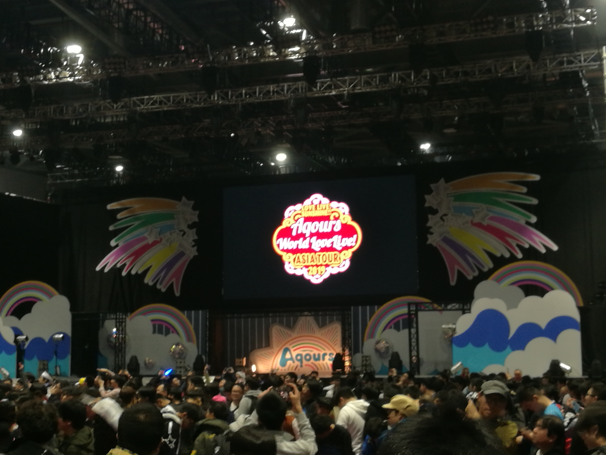

ようこそ、上海へ！
久等了！
自2018.1.20上海FMT之后，第二次跑水水event。这回赶上亚洲巡回第一场演出，正巧ZJU水水人好几个也有空，有幸组队同行。
周六早8:39的火车，一个小时后到达上海虹桥，很高兴这次场馆就在虹桥火车站附近不远，地铁一站的距离，行程还算余裕。等地铁的时候，同方向的基本全是水水人了，也算好找路线。
P.S.其实在来的火车上一直在听スタァライト九九組的歌，水水人失格，歌剧人欢喜（大嘘），star divine和約束タワー真的洗脑，少女歌剧，爱了（我懂了.jpg）
场馆
国家会展中心虹馆，交通位置上来说还算方便…毕竟紧挨着火车站和机场，周边服务环境实在不敢恭维，简直就是荒地，不知道是周末的原因还是怎么样，当天总觉得周围人烟稀少，除了水水人基本没其他人。饭店少得可怜，金拱门、BurgerKing、KFC勉强能支持食物需要。场馆外自由空间倒是很大，如果有anikura一定很好玩，可惜这次没见到，听说是在整个场馆顶部天桥有进行，遗憾没去看看。
会场正门口布置两大片帐篷：
- SIF互动
- 场贩摊位
两者中间用栏杆围出来不算宽敞的过道，两侧是花篮。居然看到了Klab送的花篮，有点意思。还有老哥抱来一箱大闪来卖，太草了
其实场馆内部结构还行。之前听说内部结构缺乏坡度，亲临之后发现确实没错…不过还好，没有到严重干扰视线的程度，顺便庆幸前排就坐的是个小巧的妹子，让我还能看得到舞台（笑）。
舞台大概这个样子：

场贩
水水，不火的；水水，不爱的
from 某群经常缺德的话题
看到队伍前我一直是这么认为的，直到绕了大半圈走到队尾又听说前一天晚上7点就有人夜排的时候，心里就只剩一句话：
狠，太狠了
10点左右到的场馆外直接开始排队，将近6.5小时之后才走到场贩帐篷前（てくてく Asia Tour!），此时距离开演仅剩1.5小时，比上次FMT久了不止一星半点。狠，真的狠，水水人太狠了。更绝的是，买完东西才发现原来队伍还能排到10点我们开始排队的位置…
实际上到14:00为止，队伍基本没有前进，只有几次缩小排队人间距让我们前进了大概几十步。感谢身后的韩国水水人&日本水水人聊天，以及单词书让我度过了一段没那么难受的等待（笑）。
bilibili上传了个走路看队伍的视频，有兴趣可以看看：2019.3.23水水亚巡闲逛
后来多亏某位早到的学长&某博士，一行人购买效率提升了不少，果然团体有好处啊。最后也就搞了这些东西：
- 5x生写，结果还开出重复的了，绝了…好在有张全员
- 棒子，基于4th渐变款的翻新款
- 场T，黑为主，和4th囚服有异曲同工之妙…
- 胸针
就打住了，售罄的时间倒是比我想象的要晚一点。
部分柿噫大队友合照：
演出
之前就听说这次似乎入场检查比较严格，走到门口，发现确实如此。有色饮料一律不允许入场，大闪孔雀啥的更别提了（不过确实有拿进去的，有点厉害）
计划是18:00开始，后来拖来拖去晚了十几分钟。有一段突然放起水水歌，一阵欢呼之后观众开始应援暖场，结果大屏幕突然刷出来的是航空公司广告，场面十分沙雕，严重生草
原本以为是先自我介绍然后再开始live部分，结果一段开场动画之后中之人们突然就上台开始跳了，实在是措手不及，措手不及。实际上整场live的结构是按照一期动画故事线把旧的歌曲串起来表演了一遍，三小时带你看完llss一期，外加超美丽中之人现场表演，唱一首看一段动画，基本上直接就知道下一首是什么曲子…本来预想能听到比较新的曲子，看来没办法了，歌单如下（时间顺序）：
common:
- 青空Jumping Heart
- 決めたよHand in Hand
- ダイスキだったらダイジョウブ!
- 夢で夜空を照らしたい
- 未熟Dreamer
- Landing action Yeah!!
- 届かない星だとしても
- 想いよひとつになれ
- HUMMING FRIEND
- MIRAI TICKET
- 君の心は輝いてるかい？
- ユメ語るよりユメ歌おう
encore:
- 恋になりたいAQUARIUM(3.23)/HAPPY PARTY TRAIN(3.24)
- Step! ZERO to ONE
- No.10（全场大合唱！）
- Thank you, FRIENDS!!（全场大合唱！）
day1和day2不同之处只有encore第一首曲目和encore过场动画不一样，其他的完全一致。
个人感觉一年级组整体表现正常；aida女士个别地方有点翻车，顺便又弹了几下钢琴，小惊喜；anju很努力讲了几句中文，说实话除了自我介绍部分，很不容易听出来（笑）；sks跳马大成功；aina&sww算是正常发挥；arisa有点惨，刚到没多久就过敏了，眼睛看起来有点肿，去看了医生，MC的时候解释了可能无法参加舞蹈，但是会继续演唱（真·声の出演），不过day2的时候还是遵医嘱休息没有登场，这样一想day1我似乎还赚到了，祝她早日康复吧。
抛开表演者，整场的气氛营造的出乎意料的好，可以说让我十分之感动。看了一些repo和反馈之后，发现这次有大量的观众是首次参加event，大部分是从全国各地集中到了上海，可能从参与感与体验热情上讲，他们是热烈气氛的主要贡献者。比起FMT，感觉整场call声不断，对经典桥段的反馈也是相当的热情，比如不知谁带头喊的ゼロじゃない；给self control应援；全场合唱片插曲ユメノトビラ。
更惊讶的是基本没见到厄介行为，本来以为水族馆又是一场百兽大战，结果比FMT那次守序了几个数量级（俺还想便乘个イェッタイガー什么的），可能是观众大多数都是守序善良，人均警察（听一个老哥讲他刚掏出孔雀，旁边三个人对他出警，笑死我乐），加上这次场馆管理严格，才让静安之乱没有被超越（草）。day2的时候唱小火车的时候还是喜闻乐见的出现了两个孔雀，不过两秒钟就放下去了，这警察也太严格了…你们这届厄介不行.jpg
最后两首曲子全场大合唱很让人难忘，尤其day2 arisa缺席之后，她的报数&演唱部分都是观众完成的，让全场感情高涨。另外，MC后半段举起来的awsl看起来沙雕感十足，你们水水人是什么沙雕粉丝啊（笑）。
Final
亚巡结束了，也该闭关好好学习了，重新整理一下心态去解决事情吧，希望以后能继续变得靠谱。
Aqours sunshine!
啊还有，最后的最后还有一句：少女歌剧太棒了，跟水水一起爱了（草）
于3.24半夜。